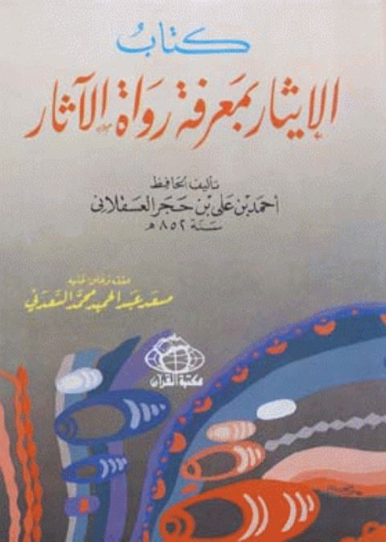

Downloads need an internet connection.
الإيثار بمعرفة رواة الآثار
Authors: أحمد بن علي بن حجر العسقلاني
Editors: مسعد عبد الحميد السعدني
Publishers: مكتبة القرآن
**▫️ العنوان: الإيثار بمعرفة رواة الآثار** ▪️ المؤلف: #أحمد_بن_علي_بن_حجر_العسقلاني ▫️ المحقق: #مسعد_عبد_الحميد_السعدني ▪️ الناشر: #مكتبة_القرآن ▫️ بلد النشر: القاهرة، #مصر ▪️ الطبعة: 1 ▫️ عدد الأجزاء: 1 ▪️ الصفحات: 162 ▫️ نوع الوعاء: #كتاب ▪️ التصنيف الرئيسي: #الحديث_وعلومه ▫️ التصنيف الفرعي: #بحوث_حديثية ۪